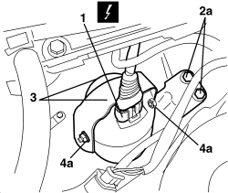

5580E40 ANTI-THEFT DEVICE SIREN - R+R
- Path
- Procedures > 55 ELECTRICAL EQUIPMENT > 5580 SPECIAL ACCESSORIES > 5580E ANTI-THEFT DEVICE > 5580E40 ANTI-THEFT DEVICE SIREN - R+R
- Kind
- repair procedure (removal / refitting; the operation number is the code)
- Applies to
- all engines; all production periods
- Interactive page
- https://sloeber94.github.io/elrnDB/alfa/159/en/#/939004928
Applies to: all engines; all production periods
 Removing
Removing
 Refitting
Refitting- Open the bonnet.
1. Working behind the left front headlamp, disconnect the electrical connection.
Description | Component |
|---|---|
ALARM SIREN |
2. Undo the bolts (2a) fixing the siren support (2b).
3. Remove the siren and support.
4. If necessary, undo the nuts (4a) and separate the siren (4b) from the support (2b).

Applies to: all engines; all production periods
Refitting
Removing- Check that the siren is not damaged.
- If removed, position the siren on the support and tighten the nuts.
- Position the siren and support.
- Tighten the bolts.
- Connect the electrical connection.
- Close the bonnet.